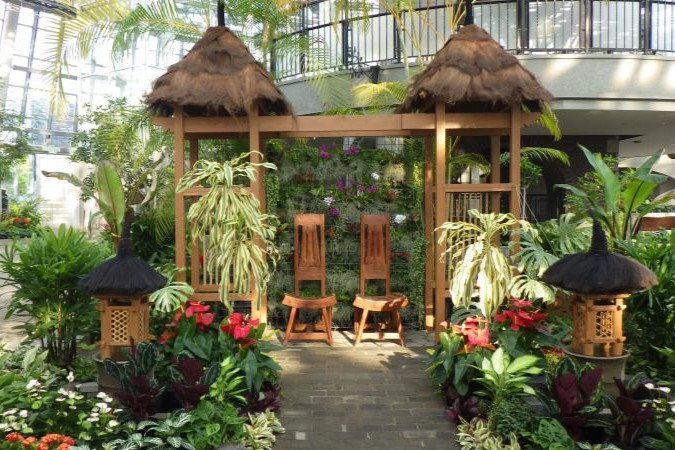

ガーデン

夏季限定 アジアンリゾートガーデン
開催期間：5月31日～9月29日
ヤシ、ラン、クロサンドラなどの熱帯植物が楽しめる、
まるで南国リゾートのようなガーデンです。
7月9日〜9月1日はウツボカズラやハエトリソウなどの食虫植物も展示され、 7月16日〜8月26日の夏休み期間にはドラゴンのトピアリー 「ミドラ」が登場！写真映えするスポットとしても大人気です。
理工学部のモノづくりマインドが源流
理工学部のDNAを受け継ぎ，教育の源流には「創造型実学」の精神があります．
実社会を想定したPBL (Project Based Learning) の導入
社会の中の複雑な課題に対し，チームで数ケ月かけて開発する経験を通じて体験的に学ぶスタイルを取り入れます．
名城大学情報工学部のPR動画
情報工学部の紹介動画